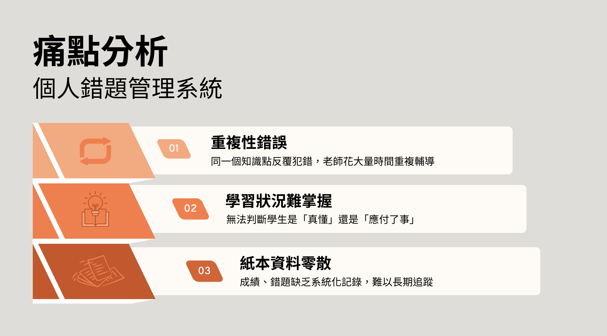
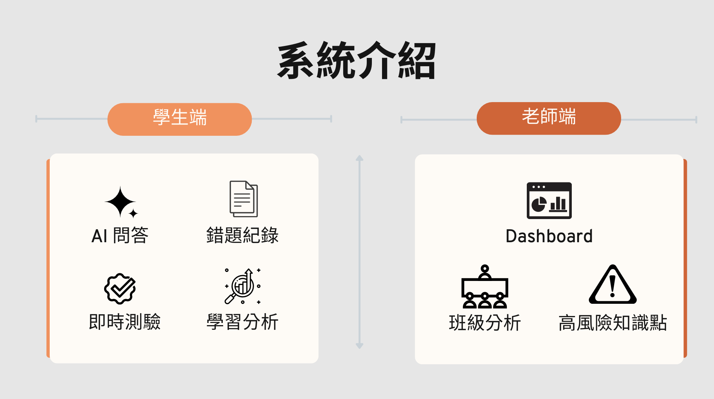
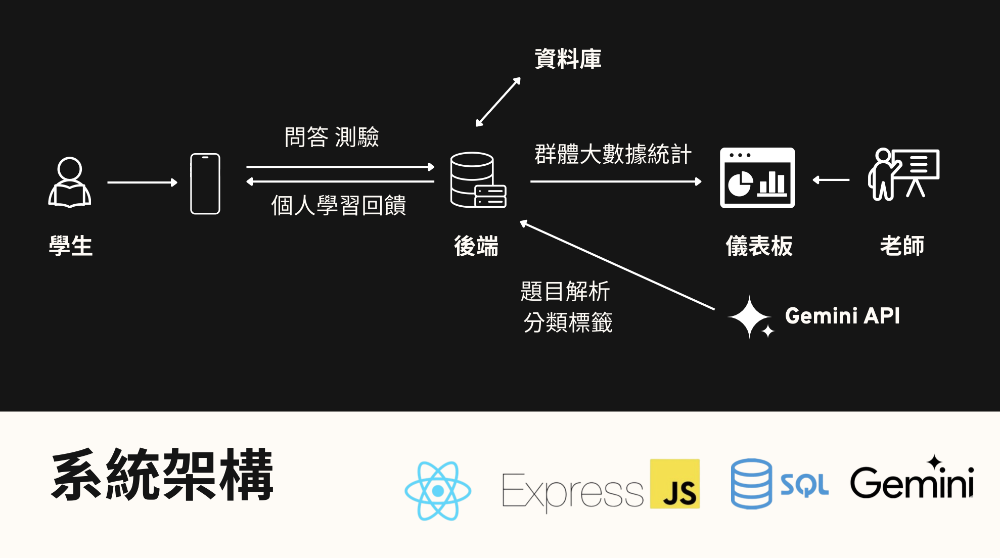
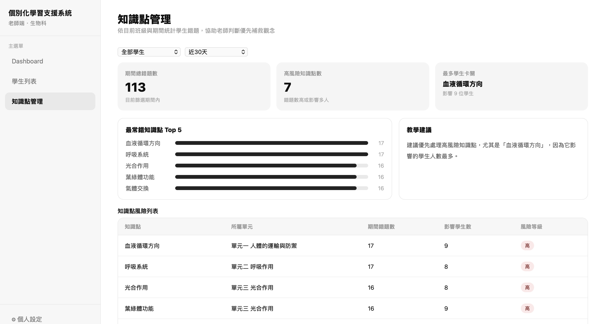
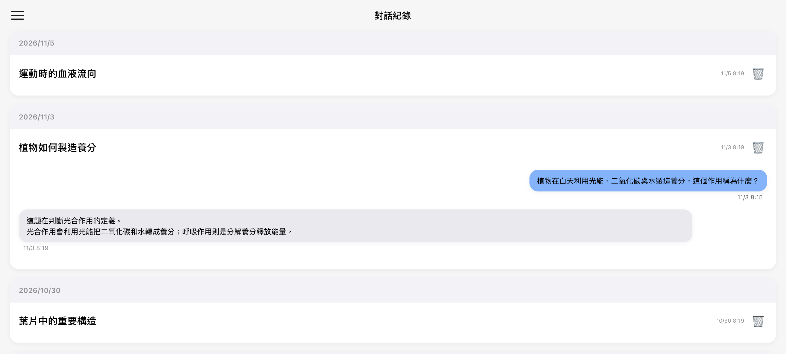
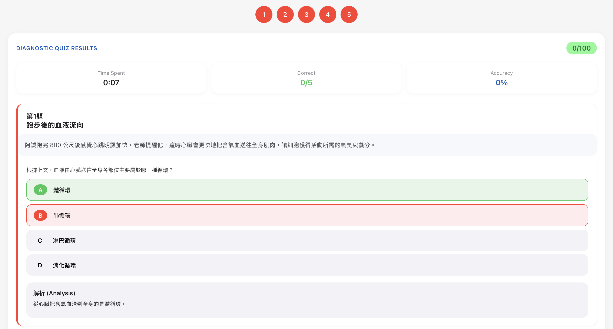

P01 / 團隊功能原型
AI 錯題學習助理平台
主持需求訪談，將補習班的錯題追蹤需求轉成 API、資料模型與系統流程，協調團隊完成學生端、教師端與 Gemini AI 模組整合。
我的角色專案組長、系統分析與整合
期間2026 Spring

AI 錯題學習助理平台｜封面
01
問題
學生的錯題、紙本紀錄與師生對話分散在不同地方，老師難以長期追蹤重複出現的知識弱點。我們以補習班的工作流程為起點，規劃將提問、錯題整理、練習與教學分析接在一起的原型。
02
我的貢獻
我主持需求訪談，整理功能與資料需求，並以組長身分安排分工、協調團隊合作。我負責系統架構與資料模型規劃、REST API 規格及前後端溝通流程，協助學生端、教師端與 Gemini API 模組交換一致的資料。
03
方法與決策
訪談先釐清老師如何回答問題、記錄錯題與判斷學生弱點；初版測試回饋再轉成圖片與文字提問、知識點分類、練習題生成及日期篩選等改善方向。系統將學生輸入送往後端，保存對話與錯題資料，再由 AI 協助解析與分類，供個人練習及教師 Dashboard 使用。API 規格與一致的資料格式，是不同模組整合的共同依據。
04
成果
團隊完成可展示的功能原型，包含 AI 問答、錯題與概念紀錄、延伸練習，以及學生與教師的分析介面。技術包含 React、Express、SQLite 與 Gemini API。畫面中的答對率、學生數及錯題數是展示內容，不能當作實際導入的採用率或教學成效。
SELECTED EVIDENCE
精選簡報與 Demo












